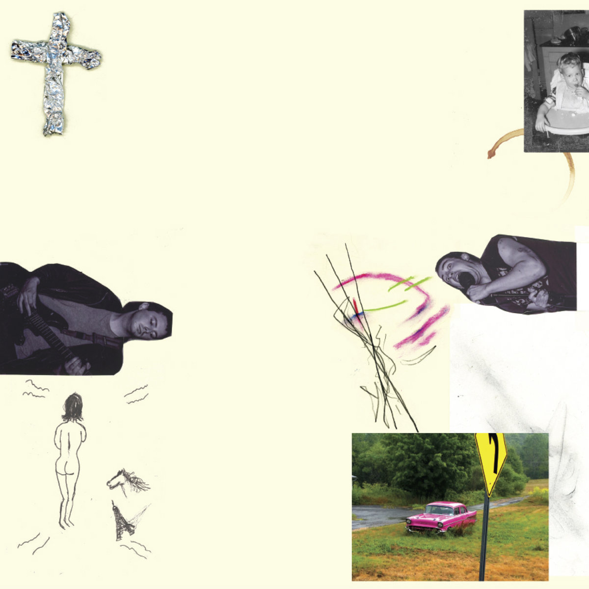
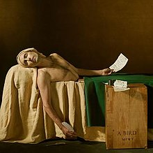
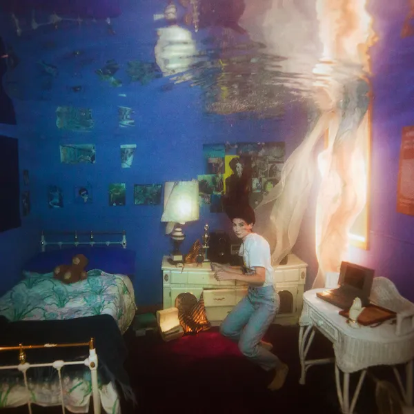
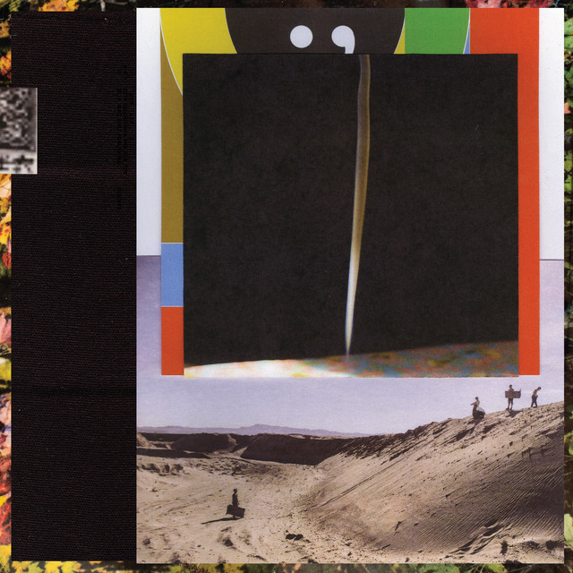

The calm before the storm….
2019 was a fairly uneventful year for me. I was settling into grad school at this point and the world events world relatively uneventful, bar whatever nonsense Trump was up to and some news coming out of China. I had also moved apartments within Albany after my old house mates had moved on. Honestly, I can’t say anything particularly interesting happened to me in 2019. Yet, the music was quite fantastic. It was somewhat opposite to the previous year, with not a huge quantity of albums that spoke to me, but the ones I found were absolute fantastic. This remains as one of my favorite top 10 lists I’ve made, each quite sonically distinct from one another. It’s kind of nice to see that the world doesn’t have to be on fire in order for great music to still be made.
My Favorite Songs of 2019
2019
- Hope - Alex G
- Chance - Angel Olsen
- Century - Big Thief
- Don’t Miss It - James Blake
- Morbid Stuff - PUP
- Faith - Bon Iver
- A Lot’s Gonna Change - Weyes Blood
- An Empty Corner - Wilco
- Replaced - Big Thief
- Terlingua Girl - Lillie Mae
25. Julia Jacklin: Crushing
After a really solid debut album, I was pretty excited to see that Julia Jacklin was releasing a new record, and its a great follow up. I must say, it’s a pretty somber one. The opening track, “Body”, detailing a toxic relationship, ending with her ending it and worrying about the damage this person might use a scandalous picture of her he has against. There brighter sound tracks like “Pressure to Party” and “You Were Right” more reminiscent of her earlier work. “Don’t Know Hot To Keep Loving You” has this lead guitar part that matches Julia’s vocals that I enjoy a lot. A super solid indie-folk and indie-rock album with some heavy lyrics.

Key Tracks: Don’t Know How To Keep Loving You, You Were Right
24. Billie Eilish: WHEN WE ALL FALL ASLEEP, WHERE DO WE GO?
This was a pleasant surprise for me, as I was never quite into her debut EP, with the exception of “Ocean Eyes”. But on “WHEN WE ALL FALL ASLEEP, WHERE DO WE GO”, Billie and her brother create this gloomy bedroom pop that didn’t really sound like anything else in popular music at the time. It’s biggest strength is where other pop music tends to ignore; subtlety. She has bangers like “bad guy”, but without the need of big beats or crazy vocal runs. “bury a friend” is an especially cool song. I really enjoy the vocal harmonies that come in and out throughout the song. It makes the song so thrilling. The album closes with this neat idea with Billie bringing back parts of various songs to act as a summary for the whole record. Super promising debut, especially for someone so young.

Key Track: bury a friend, ilomilo
23. Barrie: Happy to Be Here:
Barrie creates a really cool indie-pop and dream-pop record littered with super smooth guitars and layered harmonies. The opening track “Darjeeling” is perfect opener, with the chorus almost reminding me of “Turn the Beat Around” (and classic). “Dark Tropical” has the great chord progression that fits the song perfectly. The album isn’t too sonically diverse but it just sounds so good front to back. A perfect album to vibe to on a long drive on a nice day.

Key Tracks: Darjeeling, Dark Tropical
22. Stella Donnelly: Beware of the Dogs
Yet another really great full length debut, this time from the New Zealand native Stella Donnelly. She finds the great way to balance fun indie rock tracks with pretty dark concepts such as sexual harassment or assault. “Old Man” opens with probably the catchiest guitar hook I heard all year before it goes on to tell old married men they can’t harass young women anymore. “Tricks” is another really fun track that has such an infectious chorus and is full of cool little musical moments like on the lines “get laid”. It’d be wrong not to mention the dark “Boy Will Be Boys” confronting the bizarre permission structure that boys are allowed to have towards girls and women. Really interesting juxtapositions of bright music and dark underlying themes throughout the record.

Key Tracks Old Man, Tricks
21. Urochromes: Trope House
What a crazy noise rock and punk album this is. With the track list coming in under 20 minutes and only one track lasting longer than 3 minutes. The album just churns ahead, whether you can keep up with or not. The use of a drum machine throughout the record also creates the sound that I can’t quite put my finger on. Highlights include “Milieux”, starting off somewhat hollow in sound before the guitars come in full force, or “Trapped on A Planet” that borders on screamo. This isn’t an album I listen to all that often, but if I want something like and crazy, this record always comes to mind.

Key Tracks Milieux, Trapped on a Planet
20. Nilüfer Yanya: Miss Universe
If there was one album that I would change the rank of on this list, it would probably be putting Miss Universe much higher up. Nilüfer Yanya managed to make a really cool alternative pop record filled with cool interludes, plucky guitars, and messy vocals that are just perfect for the sound of the entire. It’s a pretty long record at that, with 17 tracks and coming in at 53 minutes, but never overstaying its welcome. “In Your Head” is has the big sound with these great fuzzy guitars to it and a great vocal performance from Nilüfer. The guitar work on “Paralyzed” is fantastic alternating between the plucky melodic lead guitar and fuzzy rhythm guitar.”Safety Net” is another highlight, a more reserved pop track with a catchy chorus. A great alternative pop record that doesn’t quite like anything else released in 2019.

Key Tracks: In Your Head, Safety Net
19. Little Simz: GREY Area
My first exposure Little Simz is a great one. This album got a lot of positive attention from many music critics and rightly so. Its a weird thing to say, but I just like the way Little Simz says words, not just her flow and cadence, but just her speaking voice. The album has beats for days, like on the jazz rap “Offence” in which she goes off on any of her haters or doubters, or the crazy flow she finds on “Wounds” or “Venom”. “Pressure”, Little Simz goes after the privileged classes while also trying to reach those same heights. My favorite hip record of 2019.

Key Tracks: Offence, Pressure
18. Stef Chura: Midnight
A new discovery for me comes in the form of Stef Chura, with Will Toledo of Car Seat Headrest producing (and appearing) on this record. Every year, there is a straight ahead indie rock album that I fall in love with, and this was the one for 2019. There are no special tricks here, just honest to god good indie-rock songwriting without needing to hide behind production. There are some many times that Stef starts the song off more reserved before opening into these garage rock anthems and I love it every time. “Method Man” just straight up kicks ass, opening confidently before descending into chaos with crazy drums and tons of feedback on her guitars. “Jumpin’ Jack” is a fun track that opens as almost a rockabiliy kind track before transitioning back to more garage rock. This album doesn’t reinvent the wheel, but man there is so much to love here.

Key Tracks: Method Man, Jumpin’ Jack
17. Andrew Bird: My Finest Work Yet
This a pretty confident album title from Andrew Bird, and I tend to agree that this is his finest work. There is plenty of the violins and virtuosoic whistling that we’ve all come to love from him. But I’d argue his vocal performances are what makes this album shine, like on tracks like “Manifest”. “Sisyphus” is a fantastic opener to the record, with a patented whistling melody and a interestingly busy bass line that gives the song so much life. “Bloodless” has chilling refrains of “bloodless for now” and “history forgets the moderates”, implying the potential for violent conflict in the not distant future. This is a really fantastic album. The only question is, is this only is finest work yet.

Key Tracks: Sisyphus, Manifest
16. Arthur Moon: Arthur Moon
Electronic music is a genre that I typically don’t spend enough time with, so this was an album that I was really happy to find. There is just this really fun interplay between the woozy vocal harmonies filled with vocal effects and the simplicity of an acoustic guitar and drumset. “Homonomo” is playful sonic adventure that has Lora-Faye Ashuvud explore settling down with a family outside the business of New York. “I Feel Better” has this great sing along quality that makes you want to join along.”Infield” has these super cool vocal effects that pop in and out of the track that just love so much. This album is reminder to me that there is ton of great electronic music out there, I just need to look.

Key Tracks: Homonormo, I Feel Better
15. Psychedelic Porn Crumpets: And Now for the Whatchamacallit
Despite the incredibly silly name, Psychedlic Porn Crumpets kick freaking ass. “And Now for the Watchamacllit” is chock full of heavy guitars and echoing vocals. “Hymm For A Droid” is one of the most hype songs that I’ve ever heard and always get my heart pumping. “Bill’s Mandolin” is another heart racer that makes in on to every running playlist that made since this album released, with the belting vocals towards the serving as perfect climax to the song. This album isn’t just loud either. There is tons of great musicality throughout the record, which prevents the album from dragging. If you’re looking for a loud guitar rock album, this is the one for you.

Key Tracks: Bill’s Mandolin, Hymn for a Droid
14. Anderson Paak: Ventura
The final record of trilogy of California named cities from Anderson Paak and its probably the most coherent. Anderson has the amazing ability to take big ideas and combine them into all kinds of classic songs, but sometimes this ambition gets the best of him, with Oxnard and to lesser extent, Malibu, having somewhat messing endings. On Ventura, he moves past that, with a collection of more funk and disco type tracks. The album starts off great with “Come Home”, that starts with this silky smooth drum beat and finishes of with a amazing Andre 3000 feature. The real highlight on record is “Winner Circle”, starting off as this Jazz rap type track, before Anderson just drops the hammer on his flow on the back of the track (such a cool moment). This record is the most focused work in Anderson Paak’s career so far, and a great way to finish the trilogy.

Key Tracks: Winners Circle, Come Home
13. Lillie Mae: Other Girls
I was honestly surprised that I found my self putting a country album so highly ranked on my list, but this album is so deserving of it. Lillie Mae has collect a tremendous set of alternative country songs that equal parts beautiful and bold. The opening track “You’ve Got Other Girls For That” starts the album with a statement, showcasing a prominent drumset and guitar part not dissimilar to George Harrsion’s “While My Guitar Gently Weeps”. But the album doesn’t stay that way, with Lillie creating just lovely traditional country and blue grass songs like on “Didn’t I” and “I Came for the Band (For Show)”, prominently displaying her great fiddle playing. The album emotional climax is the same as it started, with the show stopping “Terlingua Girl”, starting of as simple country before erupting into huge guitars and drums. This is definitely my favorite country album in recent memory, and any time I hear someone say that no one makes good country like the old days, I immediately point them to Lillie Mae.

Key Tracks: Terlingua Girl, You’ve Got Other Girls for That, A Golden Year
12. Brittany Howard: Jaime
What more can be said about the generational talent that is Brittany Howard.

Key Tracks: Baby, Stay High, Goat Head
11. James Blake: Assume Form

Key Tracks: Don’t Miss It, Where’s the Catch?, Assume Form
10. Michael Kiwanuka: KIWANUKA

Key Tracks: Piano Joint, Hero, Solid Ground
9. Weyes Blood: Titanic Rising

Key Tracks: A Lot’s Gonna Change, Andromeda, Wild Time
8. Tiny Ruins: Olympic Girls

Key Tracks: How Much, Cold Enough to Climb, School of Design
7. Big Thief: Two Hands

Key Tracks: Replaced, The Toy, Not
6. Pup: Morbid Stuff

Key Tracks: See You at Your Funeral, Morbid Stuff, Scorpion Hill
5. Wilco: Ode to Joy

Key Tracks: An Empty Corner, Love Is Everywhere (Beware), Everyone Hides
4. Bon Iver: i,i

Key Tracks: Hey, Ma, Faith, Sh’Diah
3. Big Thief: U.F.O.F.

Key Tracks: Century, U.FO.F, Contact, Cattails
2. Alex G: House of Sugar

Key Tracks: Hope, Gretel, Southern Sky, In My Arms
1. Angel Olsen: All Mirrors
This album is an absolute trimuph. I always love it when an artist just swings for the fences and pulls it off. Angel Olsen set out to make
Key Tracks: Chance, Lark, New Love Cassette, Tonight